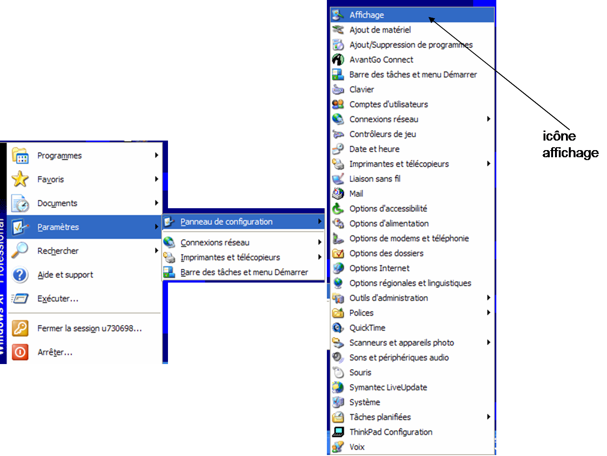
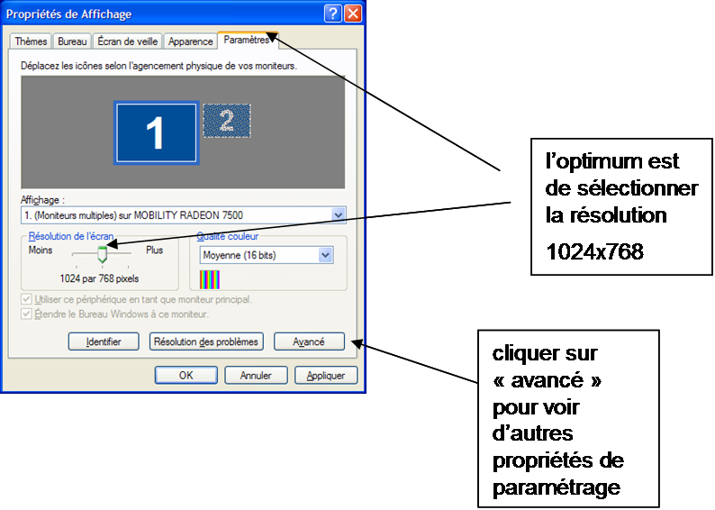
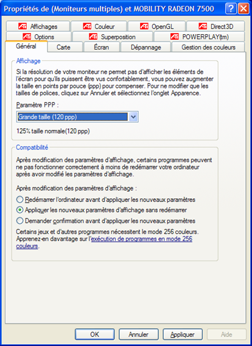
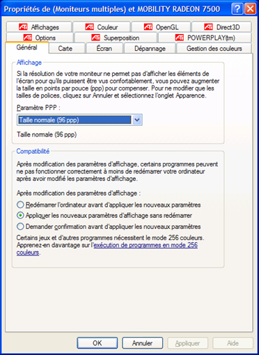

Corriger la taille de police pour afficher Le Fumiguide ProFume complètement
En fonction des paramètres définis dans le Panneau de configuration du logiciel d'exploitation Microsoft Windows, des vues différentes du Fumiguide ProFume s'affichent. Ces vues peuvent être paramétrées dans le Panneau de configuration Windows à l'aide des étapes suivantes.
Cliquez sur le bouton Démarrer et sélectionnez Paramètres et ensuite Panneau de configuration.

Dans le Panneau de configuration, double cliquez sur l'icône Affichage.

Ensuite, allez à l'onglet Paramètres dans Propriétés de l'affichage. Le paramétrage de
résolution optimale est défini à 1024 x 768.

Si le réglage ci-dessus n'assure pas un affichage total de ProFume Fumiguide, un autre réglage peut être défini, en cliquant sur le bouton Avancé.
Si la Taille d'affichage de police est "Grande police" dans l'onglet Général, sélectionnez "normal" dans le menu déroulant de Taille de police pour afficher l'écran programme complet. Cette option affiche la police dans sa taille normale et la vue entière du programme.

